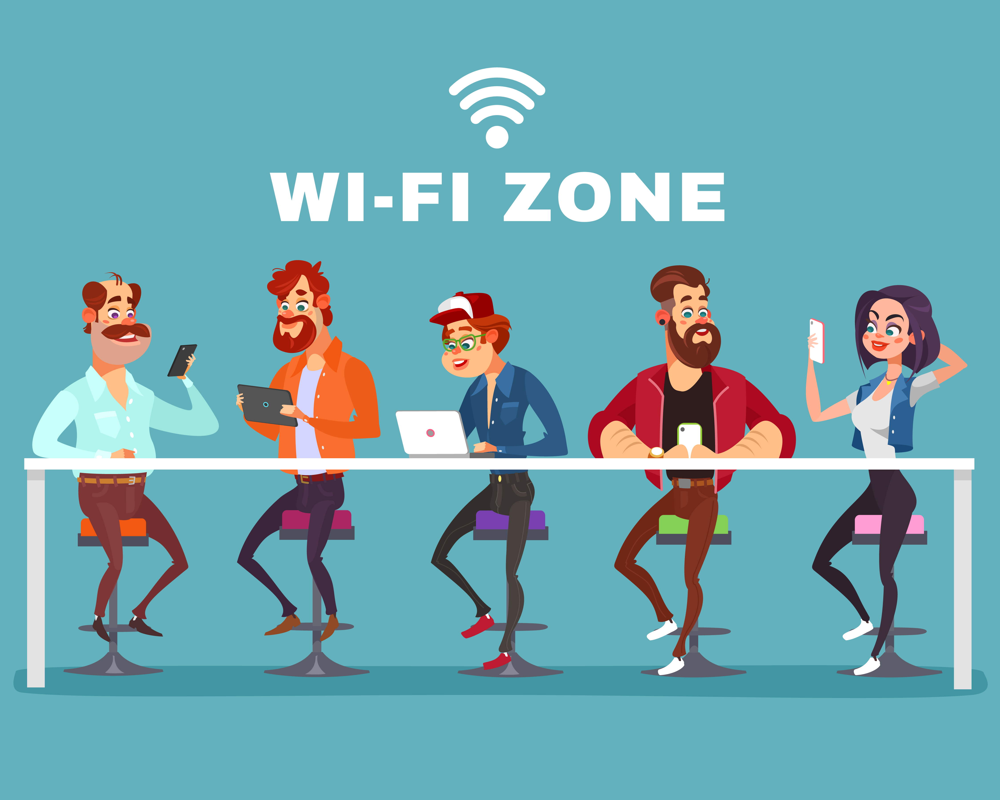

SMART LIVING & LIVE
Cultured, means that humans have a measurable quality of life (culture). Quality of life is dynamic, in the sense of always trying to improve itself. The achievement of culture in humans, directly or indirectly, is the result of education. So the quality of good education is a guarantee of quality of culture, and or a quality culture is the result of quality education.
judging from the equivalent it is not difficult to interpret it as "intelligent lifestyle". Smart living is a way of looking, a mindset that culminates in a precision, practical, and creative paradigm. But this understanding also depends on the side we look at, for example in the field of interior, smart living can mean an idea or idea of ??how to create interior conditions to be more efficient, safer, healthier and aesthetically. Even crazy ideas about how to manage our home spaces but lead to the concept of careful, efficient then you please call it "smart". Its OK
The concept of smart living replied due to the narrowness of space for occupancy, so emerged new creativity, new innovations and new tips in the design of the house. The concept of smart living represents the view of the living person about the increasing need for efficiency, effectiveness, and practicality in lifestyle. This concept is the right solution for today's modern lifestyle, but it can also mean the concept is just a trend, only time will answer it.
Example:
The embodiment of tropical house is actually an adaptation to tropical climate conditions owned by Indonesia. The abundant sunshine, high rainfall and high humidity are some features of tropical climate. Therefore the concept of tropical house, should have considered the above tropical elements.
Traditional houses in various parts of Indonesia can be a real example of how the concept of a tropical house built, a saddle or pyramid model ending with a wide terrace and tritisan is a simple step to anticipate the precipitation and avoid the heat of the sun. It is important to build a balance and harmony with nature in tropical house concepts.
Residence type of mentawai is a tropical house concept that I try to design with modern nuances. Modern I mean of course follow the current trend of the house is minimalist. The emergence of this minimalist can not be separated from the less availability of land and lifestyle of the householder who is more smart and efficient, so that the style of home architecture followed by itself
In this type of MENTAWAI house, In addition to the choice of saddle roof model, the concept of dimensional drafts or overhangs I set wider or longer to better show the characteristics of tropical homes, namely anticipating rainfall and runoff. In addition, the existence of a wide tear also reduces the effects of sunlight that penetrate into the house. . Oh yes do not forget the planning of good air circulation and light is indispensable in tropical house.
To further establish tropical nuance, tropical planting in the front garden is highly recommended, such as shrubs, dadaps, palms, and other types of shrubs that match tropical-style gardens. Furthermore, the use of finishing sills with wooden color such plitur will certainly make your home look very tropical.
To add modern features to a tropical house, of course, can start the creation or provision of concrete canopy models that generally decorate the current trend homes, although in fact its function is not very necessary because the drain is wide. Selection of natural stone with the latest models we can add, as well as the selection of paint colors with modern themes. And others
Speaking of tropical homes would not be absolute, always interesting to be discussed and discussed. :) The importance of balance and harmony with nature is the key to the success of tropical house concepts. We can also creativity to give a modern touch to follow the current home trend.